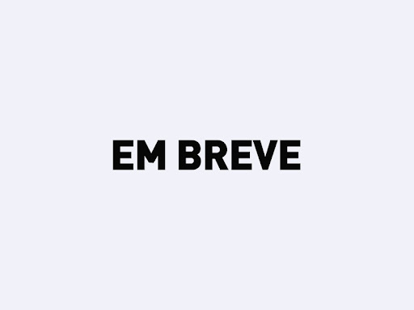

Sistema de Cadastro CRUD FullStack (Angular + PHP + MySQL)
Aplicação FullStack responsiva para gerenciamento de usuários, integrando Angular no front-end com PHP e MySQL no back-end.
Principais tecnologia utilizadas:
Todo List com Angular
Lista de tarefas interativa desenvolvida com Angular, com funcionalidades de adição, edição e remoção em tempo real.
Principais tecnologia utilizadas:
API de Cadastro de Medicamentos com Spring Boot
API RESTful com Spring Boot seguindo princípios de Clean Architecture, incluindo camadas separadas (DTO, Service, Repository), testes com JUnit e integração com front-end em Thymeleaf.
Principais tecnologia utilizadas:
Pokédex Interativa com Angular
Aplicação Angular que consome a PokéAPI para exibir uma Pokédex interativa, com busca e visualização de detalhes dos Pokémon.
Principais tecnologia utilizadas:
CineRank: Um plaforma para conhecer e avaliar os melhores filmes
Plataforma interativa para descobrir, avaliar e ranquear filmes e séries, com sistema de cadastro e login de usuários, permitindo que cada usuário adicione suas próprias obras ao site.
Principais tecnologia utilizadas: